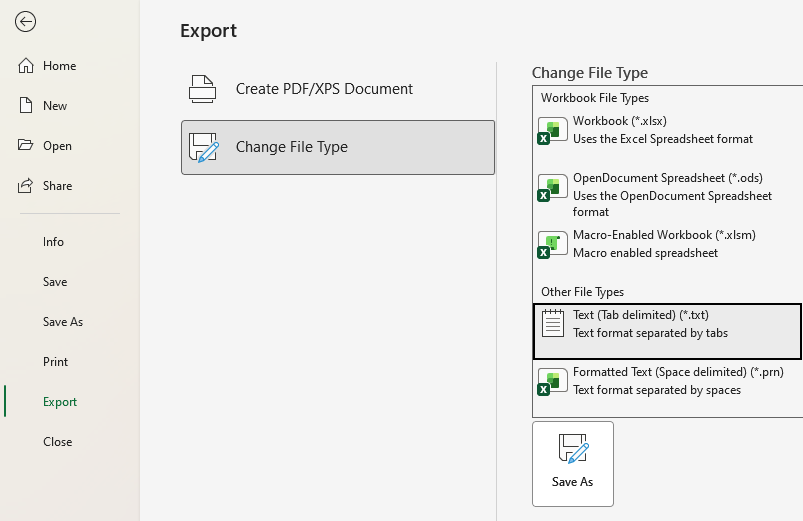

I started off this journey because I wanted to add a sound effect for my microwave on the homepage. I didn't want to record sound with a microphone like a neandratal, and I didn't want to borrow somebody else's sounds because I am a strong, independant man who doesn't need anyone else's help, so I decided to make my own from scratch. I went and did some research and ended up learning a lot about sound files. Note, what I am about to share with you is by no means the best way to make a sound file, but it is interesting nonetheless.
Hello, to those of you who skipped to the recipie.
For this sound file you will need:
One Notepad
One Excel
One Desmos (optional, but recomended)
And one Idea about what you're doing
For gluten free users, substitute 1 cup excel for 2/3 cup LibreOffice Calc
Coppy and paste this text into your notepad file:
52 49 46 46
?? ?? ?? ??
57 41 56 45
66 6D 74 20
10 00 00 00
01 00
01 00
40 1F 00 00
40 1F 00 00
01 00
08 00
64 61 74 61
?? ?? ?? ??
This is the headder for a .wav file with 8 bit resolution and 8kHz sample frequency.
Next, you will need to create your waveform. Use Desmos to visualize your sound wave. The waveform I chose was this:
$$f\left(x\right)=127.5\sin\left(\frac{2a\pi}{8000}x\right)+127.5$$
Where a is the frequency in Hz.
Now you will need to open your excel file and, in column A, create a set of numbers from 1 to however many samples you will be using. You can use the equation "=A1+1" in cell A2 and extend. In column B, write your equation and extend. For me, I put in cell B2 "127.5*SIN((2*440*PI()/8000)*A1)+127.5". In column C, round everything to whole numbers using "=FLOOR.MATH(B1)". Finally, in column D, put the data into hexidecimal using "=DEC2HEX(C1,2)"
Coppy column D and paste values only into a new sheet then export as Text (Tab delimited)(*.txt)

Coppy the entire contents of this file to your notepad file that we started earlier. Now you should be almost done. If you've noticed, some of the numbers in the header are question marks. This needs to be resolved.
Go down to the bottom of your excel sheet and locate the last index value (mine is 8000), subtract 8 (7992), convert to hexidecimal (1F38), make it 8 digit (00001F38), seperate into groups of 2 (00 00 1F 38), then reverse the order (38 1F 00 00). This is the number you put in the second set of question marks. To get the number for the first set repeat but add 28 instead of subtract 8.
I don't really know how to explain this last part so I'll just do it for you. Upload that .txt file and it'l spit out the .wav. Neato!